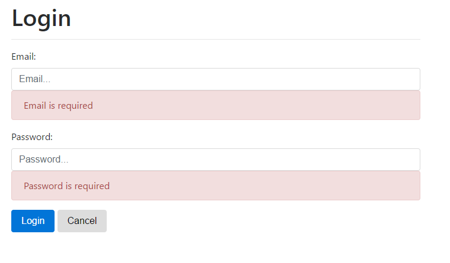
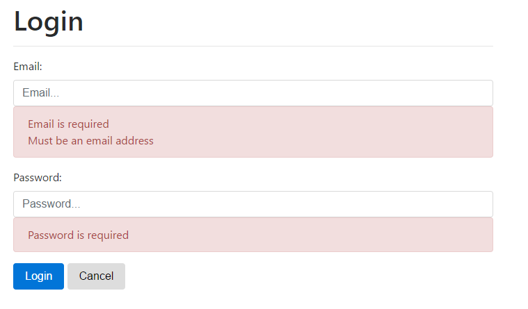
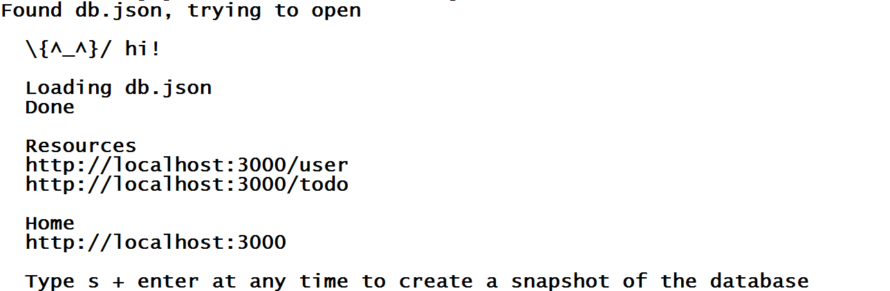
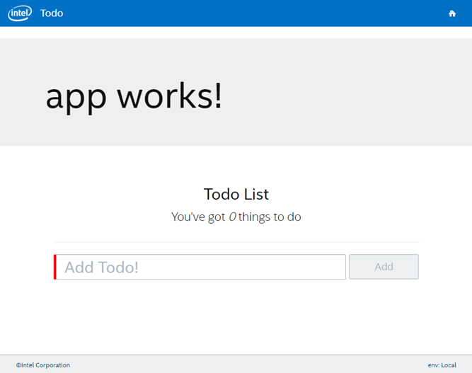
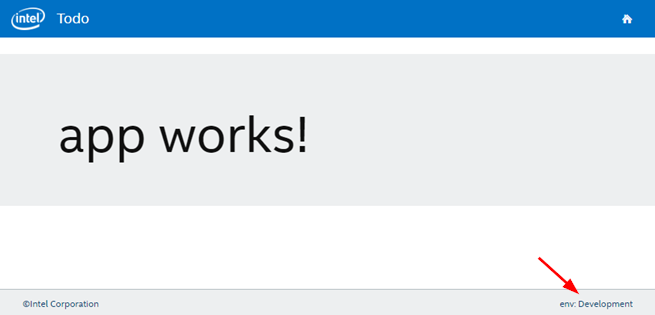
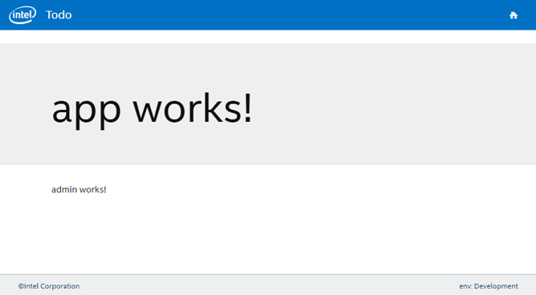
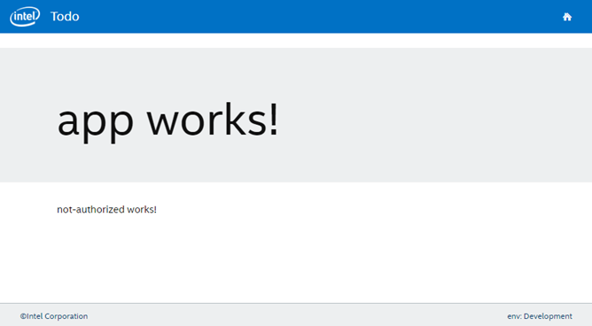
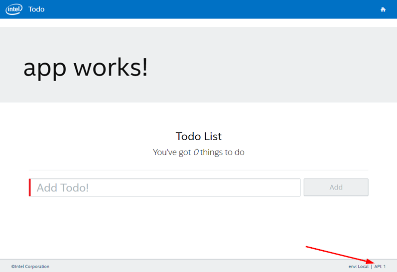
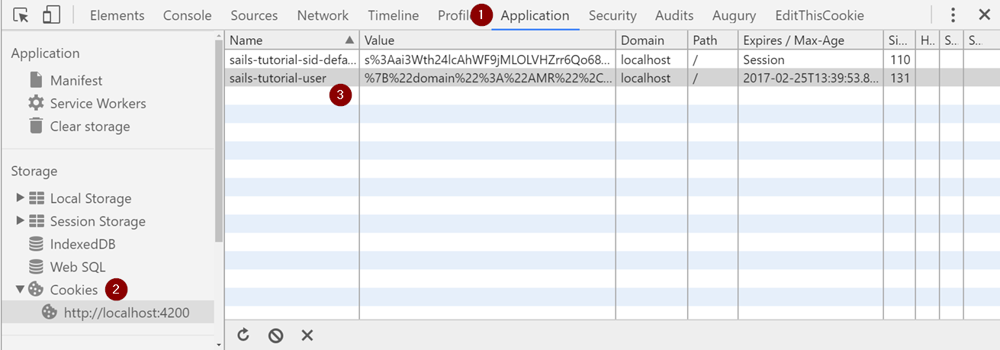

Introduction
Welcome to the Up and Running with Angular Workshop. Angular 2 was released in September 2016 and was a full re-write of the framework. With the re-write a lot has changed. In this workshop, you will learn how to build an Angular UI from the ground up. We will cover common UI requirements like navigation, footer, forms, Http API calls, routing, modules, and security.
New Naming Convention
The first thing is what to call Angular. Angular 1 is now referred to as AngularJS. Angular 2 and above is referred to as just Angular. From here on out, we will just call it Angular. The only time to refer to Angular with a version number is when you are talking about a feature that it specific to that version. For example, in Angular 4, they add the TitleCase Pipe.
Release Schedule
The second thing is that they are now following SemVer for the versioning of Angular and have a release schedule. For example, here is how version 2.3.1 would break down.

Release Schedule:
- Major: Every 6 months
- Minor: Every month
- Patch: Every week
Coming from Angular 1
Third, if you are coming from an Angular 1 background, it is best if you do not try to compare the concepts between Angular 1 and Angular 2+. You will be able to learn Angular Just treat Angular 2 as a whole new framework
Materials
Getting up and running
To get started, we need to install and configure the following software first.
- Windows, Mac, or Linux computer
- Visual Studio Code (can use any text editor but workshop tested with Visual Studio Code)
- Node 6.9+
- Angular CLI 1.0.0+
- Json Server (used to fake our API calls)
Windows Showing File Extensions
Non-Windows users can skip to next section
By default Windows is set to not show file extensions for known files which causes files such as .gitconfig and .npmrc to show up as just a period with no file extension which makes it extremely difficult to figure out what the file actually is. To fix this we need to turn set Windows Explorer to show file extensions.
Exercise: Turn On Windows Showing File Extensions
- Open Windows Explorer
Click on the View Tab and select Options

Once the "Folder Options" dialog is open:
- Click on the View Tab
- Uncheck the "Hide extensions for known file types"
Click Ok

Visual Studio Code
Visual Studio Code is Microsoft lightweight cross platform IDE.
- Download Visual Studio Code at https://code.visualstudio.com/
- Once the download finishes, launch the installer except all of the defaults.
Node.js
NodeJS is used to power the Angular CLI as well as install all of our dependencies. The Angular CLI requires Node version 6.9 or greater.
- Download the latest stable version (LTS) of NodeJS which as of this writing is 6.10.2.
- Run the installer and accept all defaults.
Verify that Node installed. Start a command prompt or terminal window and run:
node -v
Angular CLI Install
The Angular CLI (Command Line Interface) makes it so that you do not have to worry about the Angular tooling and can focus instead on your code. You can create new projects, components, modules, services, guards, pipes and routes. As well it has commands for linting, testing and running our code.
All of the code that is generated by the Angular CLI following the Angular Style Guide.
While you do not have to use the Angular CLI, it is highly recommended, will increase your productivity, and this workshop only gives the instructions for developing with the Angular CLI.
Exercise: Install Angular CLI
Open a command prompt or terminal and run the following command
npm install -g @angular/cliVerify Angular CLI
ng --version
JSON Server Install
JSON Server is a lightweight server to make REST api calls.
Exercise: Install JSON Server
Open a command prompt or terminal and run the following command
npm install -g json-serverVerify JSON Server. As of this writing version is 0.10.0
json-server --verion
Create New Project
Generate New Project
The project that the Angular CLI create for you follows all of the suggested standards and has webpack for bundling built-in to it.
Exercise: Create Angular Project
- Open a command prompt
Navigate to where you want to store your project files. I use c:\projects on Windows and ~/projects on OSx. You are free to use anywhere that you want.
Windows:
cd \OSx:
cd ~/
Create the projects directory. If you already have a directory that you store your projects in then you can skip this step.
mkdir projectsNavigate into the projects directory
cd projectsGenerate a project named ngws that uses scss for styling and includes a routing file by running
ng new ngws --style scss --routingIf you want to see the other ng new options, run
ng new --help
Opening Project in Visual Studio Code
- Open Visual Studio Code
- Click File -> Open Folder...
- Navigate to angular-tutorial directory and click Select Folder
Your project should now be opened in Visual Studio Code

Running Project
Exercise: Run the project
The Angular CLI has a built-in command for starting up a web server for your project called ng serve which will run webpack to bundle up your code, start the web server, rebuild on file changes (watch) and refresh connected browsers (live reload).
- Visual Studio Code has a built-in terminal that we can use to run our commands. On Windows, this is a powershell prompt. To open the Integrated Terminal go under the View Menu and click on the Integrate Terminal or press Ctrl+`
- You are free to use the regular command prompt outside of Visual Studio Code if you would like
Run
ng serve
If you launch your browser and navigate to http://localhost:4200, you will see a page that looks like

Review
In this chapter we learned 3 things
- How to create a new projects using the
ng newcommand - What the project layout looks like for an Angular project generated with the CLI
- How to run our project with the
ng servecommand and view it at http://localhost:4200
Bootstrap
For our styling we are going to use Bootstrap 4 which is still in alpha. The reason for picking Bootstrap 4 and not Bootstrap 3 is so that you will be able to use the Angular UI library if you so choose. We will not be using the Angular UI library in this workshop but it is a great library for component. If you are a Bootstrap 3 developer, you can see all of the change in the Migration Guide.
Install Bootstrap
Exercise: Install Bootstrap
npm install --save bootstrap@next font-awesome
Add Bootstrap to Project
Exercise: Add Bootstrap to Project
First we need to create our own custom Bootstrap style sheet so that we can override the scss variables if we want to with your own colors and styles.
- In the src\assets folder, create a new folder named bootstrap
- In the bootstrap folder, create a file called _variables.scss
Add the following to the _variables.scss file
// Variables // Colors // // Grayscale and brand colors for use across Bootstrap. $dark-blue: #003C71; // Start with assigning color names to specific hex values. $white: #fff !default; $black: #000 !default; $red: #d9534f !default; $orange: #f0ad4e !default; $yellow: #ffd500 !default; $green: #5cb85c !default; $blue: #0275d8 !default; $teal: #5bc0de !default; $pink: #ff5b77 !default; $purple: #613d7c !default; // Create grayscale $gray-dark: #292b2c !default; $gray: #464a4c !default; $gray-light: #636c72 !default; $gray-lighter: #eceeef !default; $gray-lightest: #f7f7f9 !default; // Reassign color vars to semantic color scheme $brand-primary: $blue !default; $brand-success: $green !default; $brand-info: $teal !default; $brand-warning: $orange !default; $brand-danger: $red !default; $brand-inverse: $gray-dark !default;In the bootstrap folder, create a file called bootstrap.scss
Add the following contents to the bootstrap.scss file. Note that the list of included files outside of the variables file is the same as the ones in the node_modules\bootstrap\scss\bootstrap.scss file with a ~bootstrap/scss prefix so that the scss compiler is able to find the included file in the node_modules\bootstrap\scss directory.
@import "variables"; @import "~bootstrap/scss/variables"; @import "~bootstrap/scss/mixins"; @import "~bootstrap/scss/custom"; // Reset and dependencies @import "~bootstrap/scss/normalize"; @import "~bootstrap/scss/print"; // Core CSS @import "~bootstrap/scss/reboot"; @import "~bootstrap/scss/type"; @import "~bootstrap/scss/images"; @import "~bootstrap/scss/code"; @import "~bootstrap/scss/grid"; @import "~bootstrap/scss/tables"; @import "~bootstrap/scss/forms"; @import "~bootstrap/scss/buttons"; // Components @import "~bootstrap/scss/transitions"; @import "~bootstrap/scss/dropdown"; @import "~bootstrap/scss/button-group"; @import "~bootstrap/scss/input-group"; @import "~bootstrap/scss/custom-forms"; @import "~bootstrap/scss/nav"; @import "~bootstrap/scss/navbar"; @import "~bootstrap/scss/card"; @import "~bootstrap/scss/breadcrumb"; @import "~bootstrap/scss/pagination"; @import "~bootstrap/scss/badge"; @import "~bootstrap/scss/jumbotron"; @import "~bootstrap/scss/alert"; @import "~bootstrap/scss/progress"; @import "~bootstrap/scss/media"; @import "~bootstrap/scss/list-group"; @import "~bootstrap/scss/responsive-embed"; @import "~bootstrap/scss/close"; // Components w/ JavaScript @import "~bootstrap/scss/modal"; @import "~bootstrap/scss/tooltip"; @import "~bootstrap/scss/popover"; @import "~bootstrap/scss/carousel"; // Utility classes @import "~bootstrap/scss/utilities"; /* * Font Awesome 4.x */ $fa-font-path: "~font-awesome/fonts"; @import "~font-awesome/scss/font-awesome";
Now we need to configure the angular cli to import the bootstrap libraries.
- Open the .angular-cli.json file which is the configuration file for our project for the Angular CLI
Find the apps\styles section and replace the section with:
"styles": [ "assets/bootstrap/bootstrap.scss", "styles.scss" ],
Add Banner Section to Top
Exercise: Add Banner To Top of Page
Open the src\app\app.compoment.html file and replace the contents with:
<div class="jumbotron"> <div class="container"> <h1>{{title}}</h1> </div> </div> <div class="container"> <router-outlet></router-outlet> </div>Lets change the title to something better than "App Works!"
- Open the src\app\app.component.ts file
On line 9, change the title variable to
title = 'Our Awesome Todo App!';
View Changes
Normally, we would just be able to use the live reload feature of the ng serve command but since we changed the Angular CLI configuration file (.angulal-cli.json), we have to restart the ng serve command for the changes to take effect.
Exercise: Restart ng serve
- Go to the terminal that is running the
ng servecommand and do a ctrl+c to stop it. Run the
ng servecommand again.ng serveThe web page should now look like

Review
In this chapter we learned how to use Bootstrap for our project.
Learned:
- How to install Bootstrap 4 and font-awesome
- How to integrate it into the Angular CLI in the .angular-cli.json file
- How to create our own custom Bootstrap SCSS variables to override the built-in styles of Bootstrap with our own colors
- How to create a banner at the top of the page
- How to change the text that appears in the banner using our TypeScript title variable
- Learned that when you modify the .angular-cli.json file that you have to restart
ng servefor the changes to take effect
Header and footer
In most web sites we have a header and footer at the top and bottom of the page respectively with our logo, navigation, and important links. The header will contain our logo and navigation menu while the footer will contain our copyright info.
Create Header Component
Exercise: Creating the header component
We can leave ng serve running while we make these changes and open up another Integrate Terminal for the commands below.
- In the VS Code Integrated Terminal, click the + to open a 2nd terminal
Run the ng generate command to create the header component
ng generate component shared/headerThe generate command will create 4 files:

- scss (styles)
- html (view)
- spec file (test)
- component (controller)
- add reference to the component in the app.module.ts file.
Exercise: Add the Menu
Open the src\app\shared\header.component.html file and replace the contents with the following.
<header> <nav class="navbar navbar-toggleable-md navbar-light bg-faded"> <button class="navbar-toggler navbar-toggler-right" type="button" data-toggle="collapse" data-target="#navbarSupportedContent" aria-controls="navbarSupportedContent" aria-expanded="false" aria-label="Toggle navigation"> <span class="navbar-toggler-icon"></span> </button> <a class="navbar-brand" [routerLink]="['/']"><img class="navbar-logo" src="./assets/todo_logo.png" alt="Logo"></a> <div class="collapse navbar-collapse" id="navbarSupportedContent"> <ul class="nav navbar-nav mr-auto"> <li class="nav-item active"> <a class="nav-link" [routerLink]="['/']">All Items</a> </li> </ul> </div> </nav> </header>Right-click on the logo below and save it to the src/assets folder of our project

Display Header
Exercise: Update Main page
Now that we have created the menu, we need to add it to our rendered view.
- Open the src\app\app.component.ts file
Import the header component. Add the import statement on line 2 right below the existing import statement.
import { HeaderComponent } from './shared/header/header.component';Open the src\app\app.component.html file and replace the contents of this file with the following html.
<app-header></app-header> <div class="jumbotron"> <div class="container"> <h1>{{title}}</h1> </div> </div> <div class="container clearfix"> <router-outlet></router-outlet> </div>Note: that the router-outlet tag is how Angular knows where to put the content of each of the views.If you view the web page you should see the header with logo, "All Items" menu and our banner.

Create Footer
Creating the footer is very similar to creating the header. The biggest difference is that we have some css styling that we will apply to position the footer at the bottom of the page.
The really awesome part of the css we are going to apply is that Angular has the concept of CSS encapsulation so the styling will only apply to the footer component and not to the rest of the site. This gets automatically implemented for us, just by putting the styling in the footer components scss file instead of using th global style.scss file.
Exercise: Creating the footer component
In the Integrated Terminal, run the ng generate command to create the header component
ng generate component shared/footerThe generate command will create 4 files:

- scss (styles)
- html (view)
- spec file (test)
- component (controller)
- add reference to the component in the app.module.ts file.
Open the src\app\shared\footer\footer.component.html and replace the contents with
<footer> <div class="pull-center"> ©Angular WS </div> </footer>
Exercise: Styling the Footer
We want to postion the footer at bottom of the page and change the background color. With Angular 2, we now have the ablity to have css constrained to an individual component like the footer instead of being global for the whole site to use. We still have the ability to have global css for those styles that should be applied to the whole site by using the src\styles.scss file.
Since the footer is in the src\app\shared\footer\footer.component.html file we need to add the footer styles to the src\app\footer\footer.component.scss file and add the following content
@import "../../../assets/bootstrap/variables.scss";
footer {
position: fixed;
height: 50px;
bottom: 0;
left: 0;
right: 0;
padding: 10px 5px;
border-top: 1px solid $gray-light;
background-color: $gray-lighter;
font-size: 0.8em;
color: $dark-blue;
div {
margin-left: 25px;
margin-right: 25px;
}
}
Display Footer
Exercise: Update Main page
Now we are ready to add our footer to the Main page
Open the src\app\app.component.ts file and import the footer component below the HeaderComponent import statement (note: order is not important)
import { FooterComponent } from './shared/footer/footer.component';Open the src\app\app.component.html file and replace the contents of this file with the following html
<app-header></app-header> <div class="jumbotron"> <div class="container"> <h1>{{title}}</h1> </div> </div> <div class="container clearfix"> <router-outlet></router-outlet> </div> <app-footer></app-footer>If you view the web page you should see the footer

Exercise: Fixing body height
Since we have a static footer, will need to change the body height to account for the footer height. Without doing this the body content will be hidden for the last 50px of the screen.
So far we have seen how to use component level css but Angular still has the ability to do global styles that will apply to the whole by adding them into the src\style.scss file.
Open the src\style.scss file and add the following css
html { position: relative; height: auto; min-height: 100%; } body { position: static; height: auto; margin: 0 0 60px; /* bottom = footer height */ }
Review
In this chapter will learned:
- How to create new components
- How to import and use components within other components
- Learned about component level styles so that they only apply to a single component
- Learned how to do global styles that apply to the whole site
- Learned that if we have a static footer that we need to adjust the body margin height to stop content for being hidden behind the footer.
- Learned that the
<router-outlet></router-outlet>tag is used to tell Angular the location within the html code to render the routed component's template (html)
Template Based Forms
There are 2 options for creating forms within Angular: Template based and Model based. This chapter will cover template based forms.
Template based forms are simple and easy to use. They are great for simple use cases. However, there are some limitations with template based forms: 1.) You end up with a lot of logic in your html code 2.) Cross field validation is more difficult 3.) You can not unit test your form and validation logic.
To demonstrate template based forms, we are going to be build a login component.
Create Login Component
The first thing we need to do is to create our login component using the Angular CLI. We will use the ng generate component command to do this.
Exercise: Create Login Component
- Within VS Code, open up the integrated terminal (ctrl+`) or view menu and then "Integrated Terminal"
Run the ng generate command below to create the login component
ng generate component loginThe generate command will create 4 files:

- scss (styles)
- html (view)
- spec file (test)
- component (controller)
- add reference to the component in the app.module.ts file.
Add Route
In order to view our Login component we need to tell Angular how to route to it. We are going to add a route at '/login' to the LoginComponent.
Exercise: Login Routing
Before we can view our Login component, we need to tell Angular how to route to the component
- Open the src\app\app-routing.module.ts file
Add the Import statement for the login component on line 3
import { LoginComponent } from './login/login.component';Add the LoginComponent route to the list of routes+
{ path: 'login', children: [], component: LoginComponent }Note: This will cause the LoginComponent to load into the<router-outlet></router-outlet>in the src\app\app.component.html when navigate to http://localhost:4200/login . The router-outlet tag is how Angular knows where to put the rendered content of the routed componente.
The Login page should be able to be displayed if you navigate to http://localhost:4200/login

Create Form
Next we are going to create the form without any validation logic at all. Our form will have 2 input fields: email and password and 2 buttons: submit and cancel.
Exercise: Creating the Form
- Open src\app\login\login.component.html
Replace the existing html with the following
<h1>Login</h1> <hr> <div> <form autocomplete="off" novalidate> <div class="form-group"> <label for="email">Email:</label> <input name="email" id="email" type="text" class="form-control" placeholder="Email..." /> </div> <div class="form-group"> <label for="password">Password:</label> <input name="password" id="password" id="password" type="password" class="form-control" placeholder="Password..." /> </div> <button type="submit" class="btn btn-primary">Login</button> <button type="button" class="btn btn-default">Cancel</button> </form> </div>- This form is using Bootstrap for the styling with the form-group and form-control css classes.
- The autocomplete="off" and novalidate directives for the form tag tell the browser to turn off that built-in functionality so that we can do our validation with Angular.
Add Submit Method
In order to submit the form we need to tell Angular that that login form is an ngForm and use the ngSubmit event to tell Angular what to do when the form submit button is clicked.
Exercise: Add login function
In the login.component.html file on the
<form>tag add the following attributes.#loginForm="ngForm" (ngSubmit)="login(loginForm.value)"On the email field we need to add an attribute tell Angular to implement a 1 way binding of the field. We use the
(ngModel)attribute to tell Angular what field in the form values we want to the data to be bound to.(ngModel)="email"On the password field we are going to do the same thing that we just did to the email field.
(ngModel)="password"
Next we need to implement the login function in the component.
- Open the login.component.ts file
Inside of the LoginComponent class, add the login function below. For now we are just going to output the form values to the console.
login(formValues) { console.log(formValues); }In your browser, while viewing the login form at http://localhost:4200/login open the developer tools and click the console tab so that you can see the console output.
Now enter a value into the email and password fields and click the submit button. You will see output similar to the below image where I entered the email of email@gmail.com and password of 123456

At this point we are ready to wire up the login form to actually
Required Validation
Exercise: Add Required Validation
For both the email and password fields they are required. While we could check them in the component TypeScript code, Angular has built in validation by adding the required attribute to each of the inputs.
- Open the login.component.html
Add the
requiredattribute to the email input field like so<input required (ngModel)="email" name="email" id="email" type="text" class="form-control" placeholder="Email..." />Add the
requiredattribute to the password input field<input required (ngModel)="password" name="password" id="password" id="password" type="password" class="form-control" placeholder="Password..." />
Next we want to display a message to the user when they have invalid entries in the form fields
For the email field, inside of the form-group div tag and after the input field add the following code. This code will show when the required errors triggers. To trigger the error message, click on the email field and then click on the password field.
<div *ngIf="email.errors && (email.dirty || email.touched)" class="alert alert-danger"> <div [hidden]="!email.errors.required"> Email is required </div> </div>In order to refer to the email field by name when checking errors, we need to add the
#email="ngModel"attribute to the email input field to tell Angular to create a variable for the control and make the value the ngModel value for the email field.<input #email="ngModel" required (ngModel)="email" name="email" id="email" type="text" class="form-control" placeholder="Email..." />For the password field, inside of the form-group div tag and after the input field add the following code. This code will show when the required errors triggers. To trigger the error message, click on the password field and then click on the email field.
<div *ngIf="password.errors && (password.dirty || password.touched)" class="alert alert-danger"> <div [hidden]="!password.errors.required"> Password is required </div> </div>Just like the email field, we need to add the
#password="ngModel"attribute to the input control to name the field<input #password="ngModel" required (ngModel)="password" name="password" id="password" id="password" type="password" class="form-control" placeholder="Password..." />
The last thing we want to do is to disable the login button until the form is valid.
Find the submit button and add the following attribute to it to disable the button when the login form is invalid
<button type="submit" [disabled]="loginForm.invalid" class="btn btn-primary">Login</button>Now we are ready to test our required validation.
- Trigger email by clicking on the field and then clicking off the field with it still being blank or type something in the field and then erase it
Trigger the password field the same way

Email Validation
Exercise: Add Email Validation
With the Angular 4 release, they added an email validator. To add the validator to our email field, we just need to add an email attribute like we did for the required attribute.
<input email #email="ngModel" required (ngModel)="email" name="email" id="email" type="text" class="form-control" placeholder="Email..." />
Next we need to add a message like we did for the required validator for when the email validation triggers on an invalid email. Add the following code below the required message but within the <div> that checks if there are errors.
<div [hidden]="!email.errors.email">
Must be an email address
</div>
Now we are ready to test the email validation.
The validation will trigger if you input text into the email field that is not a valid email address.

The validation will also trigger at the same time as required

Test
Disable Login Button
Exercise: Disable Login Button Until Valid
The last thing we want to do is to disable the login button until the form is valid.
Find the submit button and add the following attribute to it to disable the button when the login form is invalid
<button type="submit" [disabled]="loginForm.invalid" class="btn btn-primary">Login</button>Now when either field is invalid the login button will be disabled and a lighter share of blue

Implement Login Service
Now that we have our form done, we are going to implement our login service.
Exercise: Generate Service
- Within VS Code, open up the integrated terminal (ctrl+`) or view menu and then "Integrated Terminal"
Run the ng generate command below to create the Authorization service. I like to store my services under a shared\services folder.
ng generate service shared/service/authThe generate command will create 2 files:

- spec file (test)
- typescript (service)
You will also notice that thre is a warning that the service has not been provided. This means that we need to open up the module that we want to use the service in and add it to the providers list.
- Open src\app.module.ts
Import the AuthService
import { AuthService } from './shared/services/auth.service';Find the @NgModule providers list and add the AuthService
providers: [AuthService],Now the AuthService is available to the AppModule and we can use it in our LoginComponent
Exercise: Starting JSON-Server
We are going to use the JSON server that we installed early to create a mock api for our UI so that we can focused on Angular and not worry about creating a real API. The calls that we will be making to the API are the same calls in Angular that we would make to a real API.
- Right-click on the db.json and save the db.json file to under your Angular project directory
- Within VS Code, open up the integrated terminal (ctrl+`) or view menu and then "Integrated Terminal"
- Click the + sign to create a new terminal tab
Run the following command to start up our json-server from the root directory of the Angular project
json-server db.jsonIf everything worked correctly you should see the following output

- You can now make REST calls to http://localhost:3000/user and http://localhost:3000/todo
Exercise: Implement Auth Service Login Function
Now that we have our API server up and running, it is time to create our Auth service login function that call the API.
- Open the src\shared\services\auth.service.ts file
Import the following so that we can make our HTTP calls and get a response back.
import { Http, Response } from '@angular/http'; import { Observable } from 'rxjs/Rx';In order to use the HTTP module, we need to inject it into our constructor
constructor(private http: Http) { }We also want to create a public variable within the AuthClass to hold the output from the API call
public currentUser: any;Next we need to create our login function within the AuthService class that will call our API
login(email: string, password: string): Observable<boolean | Response> { let url = `http://localhost:3000/user?email=${email}&password=${password}`; return this.http.get(url) .do((res: Response) => { let body = res.json(); if (body && body.length === 1) { this.currentUser = body[0]; } else { this.currentUser = null; } }) .catch(error => { console.log('login error', error) return Observable.of(false); }); }
Exercise: Call AuthService from LoginComponent
Now that we have our AuthService completed, we need to call it from our LoginComponent. If we get a user back we will redirect the user to the home page
- Open the src\login\login.component.ts file
Import the AuthService so that we can make our HTTP calls and get a response back.
import { AuthService } from '../shared/services/auth.service'; import { Router } from '@angular/router';In order to use the AuthService and Router, we need to inject it into our constructor
constructor(private authService: AuthService, private router: Router) { }Next we need to update our login function to call the AuthService and redirect if it finds the user.
login(formValues) { this.authService.login(formValues.email, formValues.password) .subscribe(result => { if (!this.authService.currentUser) { console.log('user not found'); } else { this.router.navigate(['/']); } }); }Navigate to http://localhost:4200/login .
- If you enter an email of foo@foo.com with a password 123456 you should be redirected to the home page
- If you enter a bogus email or password, you will see a "user not found" message in the browser developer tools console.
Reactive Forms
In the previous chapter, we took a look at template based forms. In this chapter will will take a look at reactive based forms.
Reactive forms allow you to define the form fields and validation in the component instead of the template. You can easily test the form fields and validation logic. You can also dynamically build the form and validation in the component.
We are going to build the form to enter our Todo items using Reactive forms.
Create Component
Exercise: Create Todo Component
- Within VS Code, open up the integrated terminal (ctrl+`) or view menu and then "Integrated Terminal"
Run the ng generate command below to create the todo component
ng generate component todoThe generate command will create 4 files:

- scss (styles)
- html (view)
- spec file (test)
- component (controller)
- add reference to the component in the app.module.ts file.
Add Route
Exercise: Todo Routing
Before we can view our todo component, we need to tell Angular how to route to the page
- Open the src\app\app-routing.module.ts file
Add the Import statement for the todo component on line 3
import { TodoComponent } from './todo/todo.component';Add the TodoComponent to the home page route as specified by the
path: ''{ path: '', children: [], component: TodoComponent }Note: This will cause the TodoComponent to load into the<router-outlet></router-outlet>in the src\app\app.component.html. The router-outlet tag is how Angular knows where to put the rendered content of the routed componente.
The todo page should be able to be displayed if you navigate to http://http://localhost:4200/

Create Form
Exercise: Importing the ReactiveFormsModule
Our component is going to use the ReactiveFormsModule which means that we need to tell Angular to include this module in the imports statement it in the app module.
- Open the src\app\app.module.ts
Add ReactiveFormsModule to the @angular/forms import so that it looks like
import { FormsModule, ReactiveFormsModule } from '@angular/forms';In the @NgModule imports you need to add ReactiveFormsModule to the list
imports: [ BrowserModule, FormsModule, ReactiveFormsModule, HttpModule, AppRoutingModule ],
Exercise: Updating the Todo Component TypeScript File
Now we are ready to add all of the functionality to the component for the UI to interface with. The controllers in Angular 2 are called components and are TypeScript files. For the todo component it is the src\app\todo\todo.component.ts file. We need to add the Form and Todo import statements, add several variables into the component's class and tell Angular about the addForm group.
- Open the todo\todo.component.ts file
We need to import a few items
import { FormGroup, FormBuilder, Validators } from '@angular/forms'; import { Todo } from '../shared/classes/todo';We need to create serveral variables within the TodoComponent class
todoList: Array<Todo> = []; addForm: FormGroup; todo: Todo = new Todo(); submitting: boolean = false; errorMessage: string; openItemCount: number = 0;- todoList -> holds our todo list. Is an Array of Todo.
- addForm -> holds our configuration for the add form
- todo -> class to hold the values from our add form
- submitting -> used in the UI to toggle on and off features and change text of the add button
- errorMessage -> holds any error messages from the service calls and used to toggle div in UI
- openItemCount -> holds the number of items that need to be completed
In the TodoComponent constructor we need to inject FormBuilder and TodoService plus configure the addForm.
constructor(private formBuilder: FormBuilder) { this.addForm = formBuilder.group({ 'name': ['', [Validators.required]] }); }
Exercise: Creating the todo UI
We are now ready to create our UI.
Open the src\app\todo\todo.component.html file that was generated for you and replace the contents with:
<div class="container todo-wrapper"> <div class="page-header"> <h1 align="center">Todo List</h1> <p class="text-center lead">You've got <em>{{ openItemCount }}</em> things to do</p> </div> <form role="form" [formGroup]="addForm" (ngSubmit)="createTodo()" class="text-center"> <div class="form-group"> <input type="text" class="form-control input-lg" formControlName="name" id="name" placeholder="Add Todo!" [(ngModel)]="todo.name"><button type="submit" class="btn btn-primary btn-lg" [disabled]="!addForm.valid || submitting"><span *ngIf="!submitting">Add</span><span *ngIf="submitting">Adding...</span></button> </div> <div class="row errors"> <div class="col-md-12"> <div *ngIf="addForm.controls.name.errors && addForm.controls.name.dirty" class="alert alert-danger"> <div [hidden]="!addForm.controls.name.errors.required"> Title is required </div> </div> <div *ngIf="errorMessage" class="alert alert-danger" role="alert"> There was an error submitting your todo. Please try again. </div> </div> </div> </form> <div class="row"> <div class="col-md-12"> <div class="todo" *ngFor="let todoItem of todoList"> <span class="pull-left" (click)="completeTodo(todoItem)"><i [className]="todoItem.completed ? 'check-square-o' : 'square-o'"></i></span> <span class="done-{{todoItem.completed}}">{{todoItem.name}} <small>created: {{todoItem.createdAt | date:'short'}}</small></span> <span class="pull-right" (click)="deleteTodo(todoItem)"><i class="times"></i></span> </div> </div> </div> </div>The html is doing a lot:
- Show a title for the page
- Show a form to add new todo item along with form validation
- Show the list of todo list with icons to complete and delete todo items
- You can see several Angular ways of implementing functionality using the clauses below:
- *ngIf - replacement for ng-if. Only show section if condition is true
- *ngFor - replacement for ng-repeat. Loop through a list and do something
- [(ngModel)] - two-way data binding
- (click) - binds to the click event
- [className] - replacement for ngClass and set the css class for the element
- (ngModelChange) - runs method when the [(ngModel)] value changes
- [hidden] - hides the element when condition is true
- (ngSubmit) - submits a form
- [formGroup] - used for reactive forms. basically dynamic forms that you can control in the controller
- [disabled] - set the element to disabled when condition is true
If you view the site again you should see a UI similar to:

Adding Style
Exercise: Making the UI Pretty
Right now the UI looks pretty plain. The add textbox and add button are on different lines and there is no indication if you have met the requirements to for the todo item to be added. The only styling right now is the bootstrap classes.
With Angular 2, we can finally have component level css instead of cluttering up the global css space. The compoment level css will add an attribute to each of the html element within the components template and update the component scss file to prefix all of the css classes with the attribute.
- Open the src\app\todo\todo.component.scss
Add the following contents to the file. To ensure we are following our branding, we are importing our scss color variables.
@import "../../assets/bootstrap/variables"; .todo-wrapper { width: 100%; .ng-valid:not(form) { border-left: 5px solid $green; } .ng-invalid:not(form) { border-left: 5px solid $red; } div.todo { padding-bottom: .2em; padding-top: .2em; border-bottom: 1px solid $light-gray; font-size: 1.4em; small { font-size: .7em; color: lightgrey; } i { width: 40px; padding-right: 10px; vertical-align: middle } .done-true { text-decoration: line-through; color: $light-gray; } } .errors { padding-top: 10px; padding-bottom: 10px; } form { padding-bottom: 1em; input[type="text"] { width: 80%; float: left; font-size: 2em; margin-right: 1%; } button { width: 19%; } } }Now if you view the UI it should look like below.

- Add form has spacing between the textbox and the button.
- There is more padding in the todo item list
- The created date is muted with a light gray color
- There is a gray line between each of the todo items
- The text and icons in the todo list is bigger
- There is a red line on the left side of the textbox to indicate it is required. It will turn green once there is a value in the box.
Before we can interact with the data we need to create our service and call the service from the TodoCompoment.
Angular Service
Creating Todo Service
Exercise: Creating the Todo Service
- Create the directory shared\services
Run the Angular Cli generate command to create the todo service
ng generate service shared\services\todo- Open the shared\services\todo.service.ts file that was just generated
Add the following import statements
import { Todo } from '../classes/todo'; import { Http, Headers, Response, Request, RequestMethod, RequestOptions } from '@angular/http'; import { Observable } from 'rxjs/Rx'; import { environment } from '../../../environments/environment';- ../classes/todo is the class the we created earlier
- @anglar/http is from angular and allows us to make http calls such as calling our Api
- rxjs/Rs gives us Observables which is a replacement for Promises
- ../../../environments/environment allows us to access the environment variables we setup such as the Api url
Right after all of the import statements and before the @Injectable create a variable to hold our Api url.
let todoUrl = environment.apiBaseUrl + '/todos'; let options = new RequestOptions({ withCredentials: true });In the TodoService constructor you need to inject Http
constructor(private http: Http) { }
We are now ready to start creating our functions for our CRUD (create, read, update and delete)
Within the TodoService class we will add the CRUD functions. All of the functions use the http option withCredentials which tells the browser that it is ok to pass the name of the logged in user to the Api.
The first thing we are going to add is a standard error handler. Right now, this function really is just a placeholder until we have a standard for how errors should be handled.
// TODO // implement exception handling strategy private handleError(error: Response) { console.log(error); return Observable.throw(error.json().error || 'Server error'); }To create new todo items we are going to create the addTodo function. The Api returns a single Todo item.
addTodo(todo: Todo): Observable<Todo> { let body = JSON.stringify({ name: todo.name, completed: false }); return this.http.post(todoUrl, body, options) .map((res: Response) => <Todo>res.json()) .catch(this.handleError); }To get the list of todo items we will create the getList function. The api returns an array of Todo items.
getList(): Observable<Todo[]> { return this.http.get(todoUrl, options) .map((res: Response) => <Todo>res.json()) .catch(this.handleError); }To update a todo item we will create the updateTodo function. The Api returns the Todo item that was updated.
updateTodo(todo: Todo): Observable<Todo> { let body = JSON.stringify({ name: todo.name, completed: todo.completed, createdAt: todo.createdAt, updatedAt: todo.updatedAt, id: todo.id }); return this.http.put(todoUrl + '/' + todo.id, body, options) .map((res: Response) => <Todo>res.json()) .catch(this.handleError); }To delete a todo item we will create the deleteTodo function. The Api returns the Todo item that was deleted.
deleteTodo(todo: Todo): Observable<Todo> { return this.http.delete(todoUrl + '/' + todo.id, options) .map((res: Response) => <Todo>res.json()) .catch(this.handleError); }
In order to use the TodoService, we need to tell Angular about the service and make it available.
- Open the src\app\app.module.ts file
Import the TodoService
import { TodoService } from './shared/services/todo.service';In the @NgModule providers list you need to add the TodoService
providers: [TodoService],
Call Service from Todo Component
Exercise: Import TodoService
In order to use the TodoService within the TodoComponent, we need to import the TodoService and inject it into the construct of the TodoComponent
Add the following import statements
import { TodoService } from '../shared/services/todo.service';Add the TodoService to the construct parameters like the following. This will automatically create a scoped variable called todoService that can be used from within the TodoCompoment.
constructor(private formBuilder: FormBuilder, private todoService: TodoService) { this.addForm = formBuilder.group({ 'name': ['', [Validators.required]] }); }
Exercise: Get Data
In order to get data from our service, we need to call the getList function that is part of the TodoService. This function returns an Observable
After the ngOnInit function add the following function to get the count of open todo items
calculateOpenItems(): void { this.openItemCount = this.todoList.filter(item => item.completed === false).length; }After the ngOnInit function within the TodoComponent add the following function
getTodoListAll(): void { this.todoService.getList() .subscribe( data => { this.todoList = data; this.calculateOpenItems(); }, error => { this.errorMessage = <any>error; console.log('error getting list', this.errorMessage); } ); }In the ngOnInit function you need to call the getListAll function
this.getTodoListAll();
Exercise: Add New Todo Record
In order to create new todo item we need to call the addTodo function that is part of the TodoService. This function returns an Observable
Insert the createTodo function after the getTodoListAll function
createTodo(): void {
this.submitting = true;
this.errorMessage = "";
this.todoService.addTodo(this.todo)
.subscribe(
data => {
this.submitting = false;
this.todoList.push(data); // add to list
this.openItemCount++; // update open count
this.addForm.reset(); // reset the form to original state
},
error => {
this.submitting = false;
this.errorMessage = <any>error;
console.log('create error', this.errorMessage);
}
);
}
Exercise: Complete Todo
In order to complete a todo item we need to call the completeTodo function that is part of the TodoService. This function returns an Observable
Insert the completeTodo function after the createTodo function
completeTodo(todo: Todo): void {
todo.completed = !todo.completed;
this.todoService.updateTodo(todo)
.subscribe(
data => {
this.calculateOpenItems();
},
error => {
todo.completed = !todo.completed;
this.errorMessage = <any>error;
console.log('complete error', this.errorMessage);
}
);
}
Exercise: Delete Todo
In order to delete a todo item we need to call the deleteTodo function that is part of the TodoService. When you delete a record with a Sails API, it returns back the record that we just deleted hence the deleteTodo function returns an Observable
Insert the deleteTodo function after the completeTodo function
deleteTodo(todo: Todo): void {
this.todoService.deleteTodo(todo)
.subscribe(
data => {
let item = this.todoList.indexOf(todo);
this.todoList.splice(item, 1);
this.calculateOpenItems();
},
error => {
this.errorMessage = <any>error;
console.log('delete error', this.errorMessage);
}
);
}
Sort in the UI
Exercise: Sorting in the Client
Right now the data from the API comes back sorted, kind of. It is case sensitive and sorts name and then completed state. However, as you interact with the UI creating, completing and deleting todo item, the list does not stay sorted. In order to make it stay sorted, we need to add a sorting method in the UI.
The sorting method needs to be case insensitive and sort by multiple fields (name and completed).
With ES6 and TypeScript we can use a map and reduce function to accomplish this task. We can even have it sort if needed in decending order by appending on a - sign to the field name.
fieldSorter(fields, ignoreCase) {
return (a, b) => fields.map(o => {
let dir = 1;
if (o[0] === '-') { dir = -1; o = o.substring(1); }
if (ignoreCase === true && typeof a[o] === 'string' && typeof b[o] === 'string') {
a[0] = a[o].toLocaleLowerCase();
b[o] = b[o].toLocaleLowerCase();
}
return a[o] > b[o] ? dir : a[o] < b[o] ? -(dir) : 0;
}).reduce((p, n) => p ? p : n, 0);
}
Now that we have our generic sorting method, we can create a function to do the actual sorting
sortItems(): void {
this.todoList.sort(this.fieldSorter(['completed', 'name'], true));
}
The last thing we need to do is to call the sortItems function in the createTodo, completeTodo and deleteTodo in the subscribe function
this.sortItems();
When you use interact with the UI to view, create, complete, and delete todo items, the list will stay sorted by name and then complete state. The sort is case insensitive and the open items should be on the top of the list.
Create TypeScript class
Exercise: Creating an Object to Hold Data
Before we implement our UI we need to create a class that will be used to hold all of the data for a todo item. By creating classes, it gives us type safety and contract for what the data should look like.
To generate our class, we are going to use the Angular CLI. The command below will create a todo.ts file in the src\app\todo directory
- Create the directory shared\interfaces
Run the Angular Cli generate command to create the todo.ts file
ng g class shared\classes\todoOpen the todo.ts file and add the following variables to the todo class. The id, createdAt, and updatedAt are supplied from the Api. Note that the constructor is helpful in instantiating objects during testing.
export class Todo { constructor( name: string = '', completed: boolean = false, id: string = '', createdAt: Date = new Date(), updatedAt: Date = new Date() ) { this.name = name; this.completed = completed; this.id = id; this.createdAt = createdAt; this.updatedAt = updatedAt; } name: string; completed: boolean id: string; createdAt: Date; updatedAt: Date; }
Environment Configuration
One of the requirements that you commonly have it to be able to change configurations for your application based on the environment it is running in. A common configuration is to change the API url between development and production. In order to change the configurations for different environments, Angular uses configurations files that are stored in the src\environments folder.
Default Configuration
The src\environments\environment.ts file is the default configurations if no environment is specified when running ng serve
In the environment.ts we need to add the environmentName and apiBaseUrl values. The apiBaseUrl is how to get to your service layer, if you have one. For now we are going to use localhost:1337/v1.
Exercise: Setup Default Configuration
- Open the src\environments\environment.ts file
Add the environmentName and apiBaseUrl values.
export const environment = { production: false, environmentName: 'Development', apiBaseUrl: 'http://localhost:1337/v1' };Go to the terminal that is running the
ng servecommand and do a ctrl+c to stop it.Run the
ng servecommand again.ng serveEverything should still start as normal. You will not see any changes at this point since nothing is using those settings. We will use them when we create our footer.
Local Development
The other environment that is typically created is for local development on your machine. For this tutorial the environment.ts and local.ts have the same values but once you go to development and production they will differ.
Exercise: Create Local Configuration
- Create the file src\environments\environment.local.ts file
Add the following to the environment.local.ts file
export const environment = { production: false, environmentName: 'Local', apiBaseUrl: 'http://localhost:1337/v1' };Open the .angular-cli.json that is in the root of the project.
Find the apps\environments section and add the local configuration to the at the top of the list of environments
"local": "environments/environment.local.ts",If you want to run the local configuration we need to pass in the environment command line argument. The environment argument value is the name of the environment name in the angular-cli.json file. Note that you can only have 1 ng serve running at a time.
ng serve -e localIf the webpack compile was successful, you will now be using the local environment configuration. You will not see any changes at this point since nothing is using those settings. We will use them when we create our footer.
Exercise: Add Environment Name to Footer
Open the src\app\shared\footer\footer.component.ts file and import the environment into the file on line 2 right below the Angular core import
import { environment } from '../../../environments/environment';Inside the FooterComponent class we to add a variable to capture the environment name that Angular is running in
public env = environment.environmentName;Open the src\app\shared\footer\footer.component.html and replace the contents with
<footer> <div class="pull-right"> env: {{ env }} </div> <div class="pull-left"> ©Angular WS </div> </footer>If you view the web page you should see the footer

Notice that the env:Local in the footer is coming from the environment.local.ts file. If you stopng serveand run it without using the -e argument, the env value will change to Development
Locking Down Routes
Create Guard
Exercise: Create Guard
- Create the file src\app\shared\guards\admin.guard.ts
Make the contents of the admin.guard.ts file. Right now the canActivate return a true. To block access set it to return false. Normally the canActivate would call your authentication code to validate the user access.
import { Injectable } from '@angular/core'; import { AuthenticationService } from '../services/authentication.service'; import { CanActivate } from '@angular/router'; @Injectable() export class AdminGuard implements CanActivate { constructor(private authService: AuthenticationService) { } canActivate(): boolean { return true; } }
Exercise: Add Guard to Module
- Open the app.module.ts
Import the AdminGuard
import { AdminGuard } from './shared/guards/admin.guard';Add the AdminGuard to the providers list
providers: [TodoService, AdminGuard],
Update Route With Guard
Exercise: Add Guard to Route
Generate the admin and NotAuthorized components
ng component adminng component NotAuthorizedOpen the src\app\app-routing.module.ts
Import the AdminGuard
import { AdminGuard } from './shared/guards/admin.guard';Add a new unauthorized route that loads the NotAuthorizedComponent
{ path: 'unauthorized', component: NotAuthorizedComponent },Add a new admin route that loads the AdminComponent and has a canActivate attribute that calls the AdminGuard. Note that the canActive value is an array.
{ path: 'admin', component: AdminComponent, canActivate: [AdminGuard] },If you navigate to http://localhost:4200/admin you will be able to get into the route since canActivate is returning true.

Exercise: Test Unauthorized Access
To test that the guard is working, we need to return a false from canActivate and redirect to the unauthorized route.
In the admin.guard.ts file, change the canActivate route to the following
canActivate(): boolean { this.router.navigate(['/unauthorized']); return false; }Import the router into the admin.guard.ts file
import { Router } from '@angular/router';Inject the Router into the constructor
constructor(private router: Router) { }Now if you navigate to http://localhost:4200/admin you will be redirected to the unauthorized route

Implementing Real Authentication
So far we have just been testing out the authentication with hard coded values within the UI. Authorization should be done on the server side as it is very easy to forge and change the authorization on the client just by using the browser developer tools.
With our Sails API, we have implemented a policy that stores the user profile in a user object and then returns back a cookie with the user profile information that includes if the user is an admin or not for the client to use.
Exercise: Install Cookie Library
To read the cookie information returned from the Sails API, we are going to use the angular2-cookie npm package
- From the integrated termainal, stop the ng server process from running
Run the following command to install the angular2-cookie library from npm and store it in the dependencies section of the package.json file
npm install --save angular2-cookie
Exercise: Add angular2-cookie to module
- Open the src\app\app.module.ts file
Import the angular2-cookis CookieService. To workaround an issue with the Ahead Of Time compliation, there is a little bit more work to do with this import than we normally would have
// FIX: https://github.com/salemdar/angular2-cookie/issues/37 import { CookieService, CookieOptions } from 'angular2-cookie/core'; export function cookieServiceFactory() { return new CookieService(); }Add the CookieService and CookieOptions to the module providers list
, { provide: CookieService, useFactory: cookieServiceFactory }, { provide: CookieOptions, useValue: {} }
Creating Utility Service
With our API calls, we want to ensure that we always call the Sails API initially to get the user cookie. If we waiting until the guard was called, we would not be able to change things like menus and other options from within the site that an admin might also see. To ensure we make the call on AppComponent load. we are going to create a UtilityService that is called within the App Page ngOnInit function. The ngOnInit lifecycle function we run once the component has loaded.
Exercise: Create the UtilityService
From the integrated termainal generate a new service called UtilityService that is stored in the src\app\shared\services folder.
ng g service shared\services\UtilityOpen the src\app\app.module.ts file
Import the UtilityService
import { UtilityService } from './shared/services/utility.service';Add the UtilityService to the list of providers
providers: [TodoService, AdminGuard, { provide: CookieService, useFactory: cookieServiceFactory }, { provide: CookieOptions, useValue: {} }, UtilityService],Open the src\app\shared\services\utility.service.ts file
Make the contents the following to call the Sails utility/version route
import { Injectable } from '@angular/core'; import { Http, Headers, Response, RequestOptions } from '@angular/http'; import { Observable } from 'rxjs/Rx'; import { environment } from '../../../environments/environment'; let apiUrl = environment.apiBaseUrl; let httpRequestOptions = new RequestOptions( { withCredentials: true } ); @Injectable() export class UtilityService { constructor(private _http: Http) { } getApiBuild() { let url = apiUrl + '/utility/version'; return this._http.get(url, httpRequestOptions) .map(data => data.json()) .catch(this.handleError); } // TODO // implement exception handling strategy private handleError(error: Response) { console.log(error); return Observable.throw(error.json().error || 'Server error'); } }
Exercise: Update the AppComponent to Call the UtilityService
- Open the src\app\app.Component.ts file
Add OnInit to the @angular/core import
import { Component, OnInit } from '@angular/core';To the AppComponent class definition add an "implements OnInit"
export class AppComponent implements OnInit {Add a variable called apiBuild that is a type of number after the title variable
apiBuild: number;Add a constructor and inject the UtilityService
constructor(private utilityService: UtilityService) { }Add an ngOnInit after the constructor and with the ngOnInit call the UtilityService getApiBuild and store the result in the apiBuild variable
ngOnInit() { this.utilityService.getApiBuild() .subscribe( data => this.apiBuild = data.build, err => console.log(`Get UI Build failed: ${err}`) ); }
Exercise: Update Footer with Api Build Info
- Open the src\app\shared\footer\footer.component.ts file
Add Input to the @angular/core import
import { Component, OnInit, Input } from '@angular/core';Within the FooterComponent class, add an @Input variable to hold the apiBuild that will be passed from the AppComponent
@Input() apiBuild: number;The @Input is used when you want to pass a value as an Html property when you use the component from the parent component. In this case the AppComponent will pass the value to the FooterComponent.Open the src\app\shared\footer\footer.component.html file
Replace the line that outputs the env value with the following line to output both the env and apiBuild values.
env: {{ env }} | API: {{apiBuild}}Open the src\app\app.component.html
To the app-footer html add an apiBuild property that is set to apiBuild
<app-footer [apiBuild]="apiBuild"></app-footer>The brackets around apiBuild tell Angular to data bind the property with the value of the variable apiBuild.If you run ng serve and look at the page, you should now see an apibuild value in the footer

A side benefit to having the apiBuild number in the footer, is that you know exactly which version of the Api the UI is going against. Also when you update the API you can make sure that the UI is not caching the API results. Later on in the deployment chapter, we will add the UI build version into the footer.
Implement the Authentication Service
Now that we the utility service capturing the user profile cookie information, we are ready to create the Authentication Service that will be used in the AdminGuard.
Exercise: Create the Authentication Service
- Open the integrated terminal
In the src\app\shared\services folder create new service called AuthenticationService
ng g service shared\services\authentication
Now we need to import the service and add it to the providers list for the module.
- Open the src\app\app.module.ts file
Add the AuthenticationService to the list of imports
import { AuthenticationService } from './shared/services/authentication.service';Add the AuthenticationService to the module's providers list
providers: [TodoService, AdminGuard, { provide: CookieService, useFactory: cookieServiceFactory }, { provide: CookieOptions, useValue: {} }, UtilityService, AuthenticationService],
Now we are ready to write the code for the AuthenticationService
- Open the src\app\shared\services\authentication.service.ts file
Since we are going to be reading a cookie, we need to import the CookieService
import { CookieService } from 'angular2-cookie/services/cookies.service';We are also going to give the ability to redirect if not an admin to the unauthorized route, so we need to import the Router as well
import { Router } from '@angular/router';Before the @Injectable for the service, add a let variable to hold the cookie name to look for
let cookieName: string = "sails-tutorial-user";Now we need to inject both the CookieService and Router into the constructor
constructor(private cookieService: CookieService, private router: Router) { }Next we need to create 3 variables in the AuthenticationService class to hold if they are an admin, if the service is ready with the cookie, and what is the cookie name to use.
private admin: boolean; private ready: boolean;
Now we are ready to create our functions
The first function we are creating is called getCookie and it is used to get a cookie from the CookieService
private getCookie(key: string) { return this.cookieService.get(key); }Next we are going to create an isReady function that is used to determine if the cookie is avaiable yet. It uses a promise to wait for the cookie to be ready. This allows us to have our first page be an admin page and still be able to validate access with the cookie when it is ready.
private isReady(): Promise<boolean> { var self = this; return new Promise(function (resolve, reject) { if (typeof self.ready === 'undefined') { var intervalReady = setInterval(function () { if (self.getCookie(cookieName)) { clearInterval(intervalReady); self.ready = true; resolve(self.ready); } }, 250); } else { resolve(self._ready); } }); }Next we are going go create a function to check if the user is authorized which checks the cookie for the admin field to be true. The functions is marked private as it is only called interally within the service.
private isAuthorized(key: string): boolean { var user = null; var authorized = false; var temp = this.getCookie(cookieName); if (typeof temp === "string") { user = JSON.parse(temp); } if (user && user.admin && /admin/.test(key)) { authorized = true; } return authorized; }The last function is the one that will be exposed to the rest of the application as a public function. It checks that the cookie is available and then checks that the admin field is true. If the admin field is not true then it can redirect the user to the unauthorized route.
public isAdmin(withRedirect: boolean): Promise<boolean> { var self = this; return new Promise(function (resolve, reject) { if (typeof self.admin === 'undefined') { return self.isReady(). then(function (readyResult) { self.admin = self.isAuthorized('admin'); if (!self.admin && withRedirect) { self.router.navigate(['/unauthorized']); } resolve(self.admin); }); } else { resolve(self.admin) } }); }
Exercise: Update AdminGuard to Use AuthenticationService
- Open the src\app\shared\guards\admin.guard.ts
You can remove the router import statement since we will not be using it directly in the AdminGuard anymore.
import { Router } from '@angular/router';Import the AuthenticationService
import { AuthenticationService } from '../services/authentication.service';Inject the AuthenticationService into the constructor
constructor(private authenticationService: AuthenticationService) { }Replace the canActivate function with the following. The function now returns a Promise
and calls the AuthenticationService isAdmin function with the flag to redirect to unauthorized if not an admin canActivate(): Promise<boolean> { var isAdmin = this.authenticationService.isAdmin(true); return isAdmin; }
In order for the cookies to be available, we can't continue to use the localhost url since the browsers do not support cross domain cookies. Typically, we do not have this issue since we would be running both the Angular and Sails APIs on your local development machines. Luckily, we can get around this restriction on cross domain cookies, but changing how we run ng serve and the url that we use for the site.
- Stop the ng serve that you have running
Restart the ng serve command with the -H parameter along with any other parameters you were using before. The -H 0.0.0.0 will make the web site available on your computer name.
ng serve -H 0.0.0.0Warning: By running with the -H other people can also get to your website by using your computer name and port number 4200If you navigate to http://??????/admin, you should be able to get into the admin component. Right now the cookie that is returned from the UtilityService API call has the admin flag set to true.
Replace the "YourComputerName" in the above url with the actual name of your computer. Find your computer name on Windows by using the VSCode integrated terminal and running the following powershell snippet
$env:computername
If you open up the Chrome Developer Tools (press F12) and inspect the cookies, you will see 2 cookies, sails-tutorial-sid-default and sails-tutorial-user. To get to the cookies, click on the Application tab, Expand Cookies under Storage, and click on the http://?????:4200 url.

Exercise: Test AdminGuard Unauthorized
Since we are faking out the admin access control in order to do a tutorial that shows off being an admin and not an admin, we need to change the API that we are using to get the cookie from the API to another API endpoint that will return admin is false in the cookie.
- Open the src\app\shared\services\utility.service.ts file
In the getApiBuild function, change the url that is used to
let url = apiUrl + '/version';If you now navigate to or refresh http://?????:4200, you should get redirected to the unauthorized page
Make sure when you are done testing to change the url back to
let url = apiUrl + '/utility/version';
Implementing Default Route
We have not yet implemented a default route. If you add anything to the end of the url, Angular will error out that it can not match it to any of the known routes. You can see this error in the Chrome Developer Tools Console.

There are 2 ways to fix this.
- Make the TodoComponent the default so that it will redirect the user to that page. This is not as nice of a user experience since it does not alert the user that the url they were trying to go to does not exist.
- Create a "Not Found" component and redirect the user to that component if none of the other routes match. This is the preferred method.
Add Default Route
Exercise: Adding Default Route
- Open the app.routing.ts file
Add an additional route to the Routes list with a ** for the path and set the component to TodoComponent. This will tell Angular to use the TodoComponent when it can not determine the route
, { path: '**', component: TodoComponent }Make sure that you make the default route the last route. Any routes below the ** route will be ignored.
Create Not Found Component
Exercise: Redirecting User to "Not Found" component
From a user experience perspective, it is a much experience to redirect the user to a "not found" page instead of redirecting them back to the home page. Create the route not found page is just like we did with the todo component.
Run the Angular Cli generate command to create the notFound component
ng generate component notFound4 files are created just like when we created the TodoComponent earlier. You will notice this time though that the Angular Cli put a dash between not and found. It will automatically do that when it encounters an uppercase character.

In the src\app\app.module.ts file you may need to add an import statement for the NotFoundComponent and add it to the declarations list to make it available. Sometimes the Angular CLI adds it automatically for you
import { NotFoundComponent } from './not-found/not-found.component';declarations: [ AppComponent, HeaderComponent, FooterComponent, TodoComponent, NotFoundComponent ],In the src\app\app-routing.module.ts file, add an import statement for the NotFoundComponent
import { NotFoundComponent } from './not-found/not-found.component';In the app-routing.module.ts file, change the ** route to use the NotFoundComponent
, { path: '**', component: NotFoundComponent }If you now try to navigate to http://localhost:4200/unknown you will be shown the NotFoundComponent

Deploying
Production Build
Before deploy you will need to run an a build with the Angular CLI. With the build you can tell it the environment to use and if it is a production build or not. A production will minify everything.
Select which type of build you want to run: Non-Production or Production
Exercise: Running Non-Production Build
Run the following command to run a build that uses the environment.ts file and is not a production build
ng build
Exercise: Running a Production Build
Run the following command to run a build that uses the environment.prod.ts file and is a production build. The environment name must match the file name for it to be valid.
ng build --target=production --environment=prod
Heroku
Exercise: Heroku
Thank you
I hope that you enjoyed going through this tutorial. If you have any questions, please hit me up on twitter @digitaldrummerj.